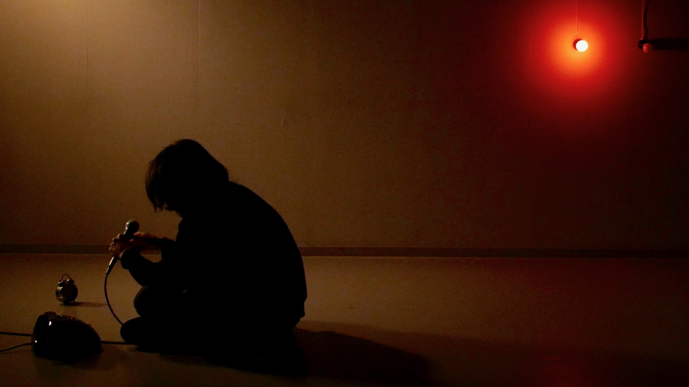
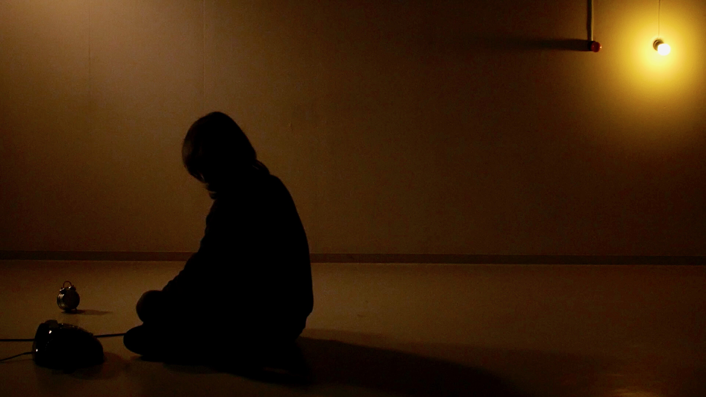
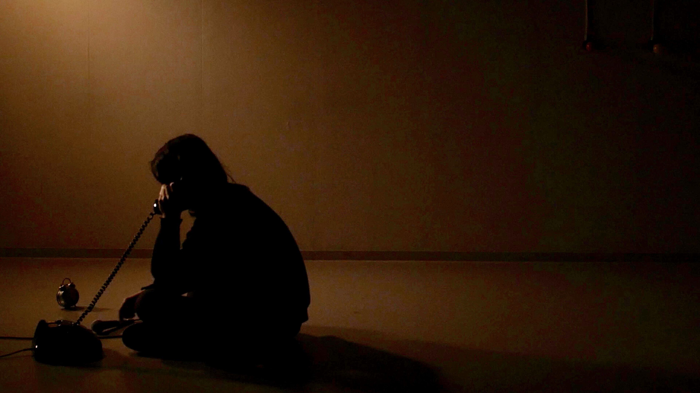
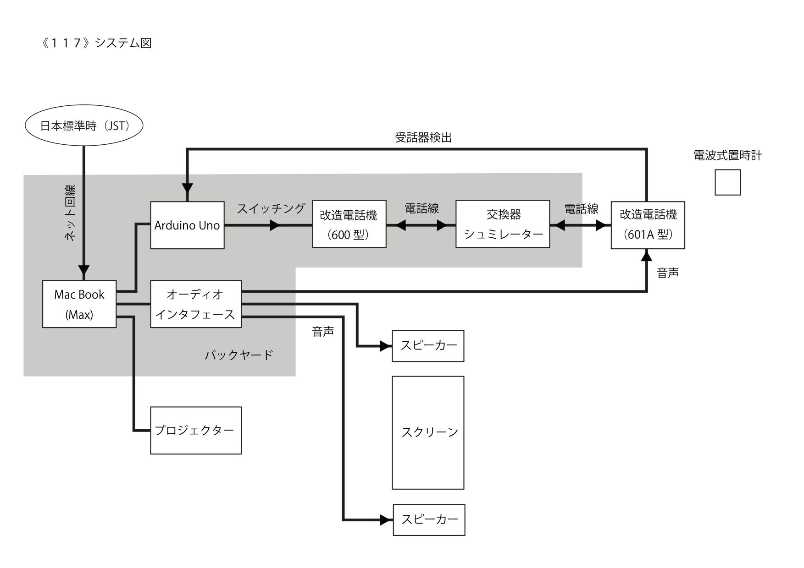

- 
- 
- 
- 
117
Mixed media | 2021-
────────────────
An "experimental film" or media installation on the theme of synchronism and disagreement between auditory and visual experiences in visual experience, time and real time in repetitive media. The motif is NTT's telephone time signal service "117", which has lost its practicality and is being forgotten.
In the exhibition space, there are images projected on the wall, sound from speakers, and an old-fashioned analog telephone and a clock (radio-controlled) that indicates the current time in a place a short distance away. The video shows a man performing two types of actions with light and sound signals as cues. One is to speak the date and time of video playback (real time) into the microphone. Another is to make a phone call. When "Jiho Otoko" makes a phone call, the bell of the actual telephone in the exhibition space rings. If the audience picks up the phone at that time, they hear a man's voice that sounds like number 117. The time read by the man should be synchronized with the clock in seconds. But if he watches the footage for a while, he realizes it's loop material.
The author's "Time call man" is a pallid caricature of a human being living in an information society, in which technical time is inherent in the body, and connection and synchronization are endlessly repeated.
映像体験における聴覚と視覚、反復されるメディア内の時間と実時間との間での同期と不一致をテーマにした「実験映画」ないしはメディアインスタレーション。モチーフとなったのは、もはや実用性を失い、忘れられつつあるNTTの電話時報サービス「117番」である。
展示空間には壁面投影された映像、スピーカーからの音、少し離れた場所に旧式のアナログ電話機と、現在時刻を示す時計（電波式）がある。映像には男が写っており、光と音の信号を合図に、2種類の動作を行う。ひとつはマイクに向かって映像再生時（リアルタイム）の日付と時刻を喋ること。もうひとつは電話をかけること。「時報男」が電話をかけると、展示空間の実物の電話のベルが鳴る。もしそのときに観客が受話器を上げたら、男の声で、117番ふうの時報音声が聴こえる。男が読み上げる時刻は秒単位で時計とシンクロしているはずだ。しかし、しばらく映像を見ていれば、それがループ素材であることがわかる。
作者の扮する「時報男」は情報社会を生きる人間の青ざめたカリカチュアであり、技術的な時間を身体に内在し、接続と同期を永遠に繰り返す。